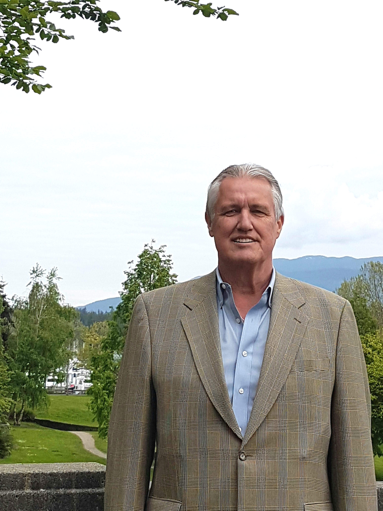

Gandalf Staff

Bob Symington, M.Sc., P.Geo., AP
Gandalf is owned by Mr. Bob Symington, Approved Professional (CSAP), Licenced Geologist/Hydrogeologist (Washington State), P.Geo., M.Sc., Hydrogeologist. Bob is a Standards Approved Professional of the Contaminated Sites Approved Professional (CSAP) Society since 2008. He was a founding director of the society and past chair of its Performance Assessment Committee. Bob is the Past President of the British Columbia Environment Industry Association (BCEIA) and was appointed to the Licensed Environmental Professional Sub-Committee Advisory Group set up by the Association of Professional Engineers and Geoscientists of BC.